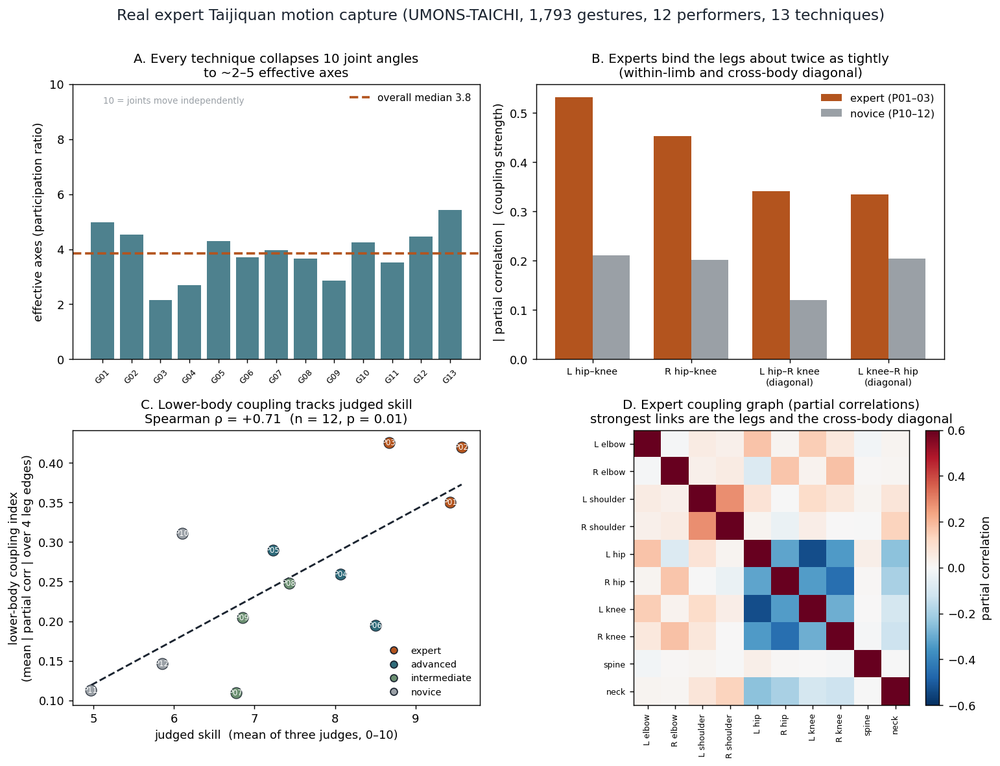

Data and results
Every computational output from the coordination model, with the code that produces each one. The theory and the formalism live on the Methodology tab; this page collects the numbers and the figures. All of it runs on numpy and matplotlib, and the code and the data fetch live in the repository under model/.
1. Fit to CMU motion-capture
We fit the Gaussian graphical model to CMU Graphics Lab motion-capture for three tasks, walk, run, and jump, with one subject and two trials each, over 50 rotational degrees of freedom. The fit tests the model’s three premises, that movement uses few dimensions, that its dependence structure follows anatomy, and that the sign of coordination changes from one movement to another. The code is model/fit_ggm.py, and model/fetch_cmu.sh downloads the six trials first.

(A) Effective dimensionality
The raw-covariance participation ratio is dominated by a few large-amplitude joints and overstates the collapse; the standardized (correlation) ratio is the honest measure. Even standardized, about five of the fifty dimensions carry the movement.
| Task | frames | PR (raw cov) / 50 | PR (correlation) / 50 |
|---|---|---|---|
| walk | 645 | 2.74 | 4.78 |
| run | 278 | 2.98 | 5.05 |
| jump | 854 | 2.65 | 4.96 |
(B) Anatomical recovery
The estimated partial correlations, the edge weights of the graphical model, peak between anatomically adjacent joints by a factor of about two. The separation runs well above chance (AUC 0.5 is chance, 1 is perfect).
| Task | |partial corr|, adjacent | |partial corr|, non-adjacent | separation AUC |
|---|---|---|---|
| walk | 0.454 | 0.206 | 0.798 |
| run | 0.429 | 0.239 | 0.712 |
| jump | 0.511 | 0.253 | 0.817 |
(C) The sign flips across tasks
The correlation of the matched flexion axis of paired limbs changes sign from walk and run to jump, while the effective dimensionality barely moves. Walk and run sit at anti-phase (a relative phase of half a cycle), jump at in-phase (a relative phase of zero).
| Limb pair (matched flexion axis) | walk | run | jump |
|---|---|---|---|
| legs, left / right | −0.92 | −0.89 | +1.00 |
| arms, left / right | −0.95 | −0.85 | +0.93 |
| left arm / right leg (contralateral) | −0.94 | −0.92 | +0.07 |
| left arm / left leg (ipsilateral) | +0.93 | +0.79 | +0.08 |
Reproduce: cd model && bash fetch_cmu.sh && python3 fit_ggm.py
(D) The measured relative phase
Section (C) shows the sign of coordination flips across tasks. Here we recover the relative phase itself, the timing offset between two paired limbs, from the joint-angle time series with a Hilbert transform, so that reading a coupling sign as a relative-phase order parameter rests on a measured phase and not on a sign alone. Walking and running lock the paired limbs near 180 degrees, the anti-phase attractor, and jumping near 0 degrees, the in-phase attractor, with phase-locking values from 0.90 to 0.99, where 1 marks perfect locking. Relative phase is well defined for the rhythmic tasks. The jump column reads as in-phase timing rather than a limit-cycle phase.

| Limb pair (mean phase, locking) | walk | run | jump |
|---|---|---|---|
| legs, left / right | 181° (0.96) | 170° (0.94) | 3° (0.99) |
| arms, left / right | 186° (0.97) | 199° (0.93) | 6° (0.90) |
Reproduce: cd model && python3 relative_phase.py (after fetch_cmu.sh)
2. Fit to real Taijiquan motion (UMONS-TAICHI)
Section 1 fits the model to walking, running, and jumping, which test the machinery but sit far from the movement this project studies. This section runs the same fit on the movement itself. UMONS-TAICHI (Tits, Laraba, Caulier, Tilmanne & Dutoit 2018) is a motion-capture recording of twelve people performing thirteen Taijiquan techniques, captured with a Kinect V2 sensor at twenty-five body joints and thirty frames a second. Three judges scored each performer on a nought-to-ten skill scale, so the recording carries a skill gradient from expert (mean 8.7 to 9.6) down to novice (mean 5.0 to 6.1). We read each frame as ten joint angles, the flexion at the two elbows, two shoulders, two hips, two knees, the spine, and the neck, and we fit the coordination model to the 1,793 gesture clips that hold at least sixty tracked frames. The code is model/fit_umons.py, and model/fetch_umons.sh downloads the Kinect skeletons first.
(A) The collapse holds on real tai-chi
The participation ratio, defined in section 1, counts the effective dimensions a movement uses. Across all thirteen techniques the ten joint angles collapse onto about four effective axes, a median of 3.85, ranging from 2.2 for the most constrained technique to 5.4 for the freest. The collapse that the model assumes, and that the CMU fit found in walking and running, holds in real Taijiquan and holds in every technique.
(B) The coordination graph couples the legs, and couples across the body
The partial correlations, the edge weights of the graphical model from section 1(B), read out which joint angles move together once every other angle is held fixed, so that only the direct link between a given two remains. A value near zero means two angles vary independently. A value far from zero means they are coupled, and the sign records only the direction of that coupling, whether the two angles open together or one opens as the other closes. What matters for coordination is the strength, the distance from zero, so we read each edge from the size of the number and not its sign. Pooled over the three experts, the strongest edges run down the legs and across them.
| coupling (expert pool) | partial correlation | along the anatomical tree? |
|---|---|---|
| left hip / left knee | −0.53 | yes, within-limb |
| right hip / right knee | −0.45 | yes, within-limb |
| left hip / right knee | −0.34 | no, cross-body diagonal |
| right hip / left knee | −0.33 | no, cross-body diagonal |
| left hip / right hip | −0.32 | yes, pelvis |
| left shoulder / right shoulder | +0.28 | yes, shoulder girdle |
| hip / neck | −0.24 | no, long-range vertical axis |
Two of the four strongest edges, the cross-body diagonals that tie one hip to the opposite knee, do not lie along the body’s anatomical tree. Against the CMU data the partial-correlation graph recovered the anatomical tree at an AUC near 0.8; here it recovers it at 0.53, barely above the chance value of 0.5. The reason is not that the method fails on tai-chi but that tai-chi’s coordination graph is denser than the tree. The within-limb links along the legs are the strongest edges present, and on top of them the movement adds the contralateral leg diagonal, a long-range hip-to-neck coupling, and weaker ipsilateral links from elbow to knee and shoulder to hip. Those added couplings are the coordinations Taijiquan instruction names directly, the cross-body connection and the vertical axis, and the same-side pairing the tradition calls the three external harmonies.
(C) Expertise sits in the lower body, not in the dimension count
The skill gradient lets us ask what separates an expert from a novice, and the answer is specific. It is not the effective dimensionality, which does not track skill at all. It is the strength of the lower-body coupling. For each performer we scored one number, the mean absolute partial correlation over the four leg edges, within-limb and cross-body diagonal, and set it against the judges’ skill score. The two rise together, at a rank correlation of 0.71 across the twelve performers. The three experts hold the tightest leg coupling, near 0.4; the loosest performers are novices. The experts bind the legs about twice as strongly as the novices, while their effective dimensionality is no lower.

| measured against judged skill (n = 12) | rank correlation |
|---|---|
| lower-body coupling strength | +0.71 |
| effective dimensionality (participation ratio) | +0.04 |
The low-dimensional coordination is what the practice already shares, expert and novice alike. Skill is not fewer dimensions but a particular coupling laid on a particular set of joints, the legs bound into one connected unit, which is what the classical maxim states when it roots the movement in the feet and develops it through the legs. A teaching image and a two-word correction target exactly this, a coupling on named joints rather than a global change in how much the body varies. Whether the coupling rises in a single learner as a teacher works on them, rather than differing between the trained and the untrained people captured here, is the question a longitudinal recording would answer, and it is where a controlled experiment would make its case.
Reproduce: cd model && bash fetch_umons.sh && python3 fit_umons.py
3. Two-body convergence (step 1)
Step 1 of the intended outcome asks whether a metaphor drives two differently built bodies onto the same relative-phase coordination, where a joint-angle instruction cannot. We ran it on the same model, with no new data. A teacher trained to an anti-phase (mirror) arm coordination sits at a relative-phase order parameter r = −0.69. Two learners with different anatomy, a different baseline precision and different segment lengths, start in-phase, on the opposite side of zero. As the shared metaphor strengthens, both learners cross zero and settle near the teacher, so the gap closes from about 1.3 to about 0.1. A joint-angle instruction sets a mean pose and never touches the precision matrix, so its gap stays flat at every strength.

| body | baseline r | under the metaphor (β = 4) | gap to teacher |
|---|---|---|---|
| teacher | −0.69 | target | — |
| learner A | +0.61 | −0.53 | 1.30 → 0.16 |
| learner B | +0.56 | −0.71 | 1.24 → 0.03 |
The joint-angle channel gap stays 1.27 at every strength, since a mean pose carries no coordination. The two channels differ in kind, not in degree.

Reproduce: cd model && python3 two_body.py
4. Frustration, conflicting metaphors freeze the body (step 3)
Step 3 tests the prediction from the Methodology page that two conflicting teaching images cannot both be satisfied, so the coordination they share freezes. We load an in-phase coupling at weight W(1−λ) and an anti-phase coupling at weight Wλ on the same arm pair, and sweep the conflict λ from one image to the other. At λ = ½ the two demands are equal. The off-diagonal coupling passes through zero while both collective modes stiffen, so the cheapest coordinated mode’s variance drops about sevenfold, from 1.88 to 0.28, and the arm correlation passes through 0.00. Two images cancel rather than average into a compromise. No new data, the sweep runs on the model.

| conflict λ | free-mode variance | arm correlation |
|---|---|---|
| 0 (one image, in-phase) | 1.88 | +0.85 |
| ½ (two conflicting) | 0.28 | 0.00 |
| 1 (one image, anti-phase) | 1.84 | −0.85 |
Reproduce: cd model && python3 frustration.py
5. Code and reproducibility
The repository holds everything under model/.
taichi_model.py, the core Gaussian graphical model of body coordination.fit_ggm.py, the fit to CMU motion-capture, withfetch_cmu.shto download the trials.relative_phase.py, the measured relative phase of section 1(D), needsscipy.fit_umons.py, the fit to real Taijiquan motion, withfetch_umons.shto download the Kinect skeletons.two_body.py, the two-body convergence of step 1.frustration.py, the frustration sweep of step 3.README.md, the run instructions and the committed results.
cd model bash fetch_cmu.sh && python3 fit_ggm.py # section 1 A-C python3 relative_phase.py # section 1 D bash fetch_umons.sh && python3 fit_umons.py # section 2 python3 two_body.py # section 3 python3 frustration.py # section 4